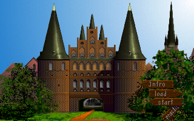
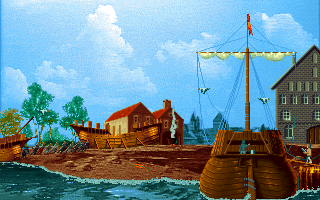

名稱：大航海家1／貴族1 (The Patrician，英文版)
簡介：Ascaron 1992年出品的商業模擬遊戲，玩家扮演一位商人，藉由船隻到各地進行貿易，
並可建造企業、住宅，也可從事政治，或與海盜互動等 [待補]。


備註：本版為光碟版
保護：磁片版為手冊密碼，破解碼不明
光碟版為光碟，破解碼（需放入光碟才有音軌背景音樂）：
PATR.EXE
83 7E FC FF 75 2F
-- -- -- -- EB --
C1 E8 0F 3D 01 00 75 0A
-- -- -- -- -- -- EB --
檔案：patriz-disk.rar = 磁片版（有MIDI背景音樂）